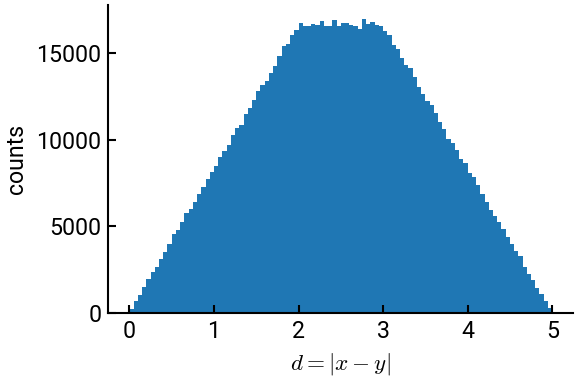

1. Random number generation#
Important!
If you’re completely new to Python, you may want to go through the exercises in the Python fundamentals notebook first!
There are many instances in probability and statistics, particularly when it comes to sampling, that you will need to produce random numbers or simulate random processes. This can be done quite efficiently in Python, allowing you to model engineering designs with greater confidence.
Note
The syntax for generating random numbers in Python has evolved over the years, so this workbook tries to follow current best practices!
Summary of commands#
In this exercise, we will demonstrate the following:
-
np.random.default_rng()- Object for generating random values.Optional
seedfor consistent values.
rng.uniform(low, high, size)- Generates a random array ofsizedimensions from a uniform distribution between[low, high).If
sizeis not specified, then a single value is generated.
np.abs(arr)- Takes the absolute value of all elements inarr.np.sum(arr)- Sums the values inarr.Can be along a specific
axisif given.
-
plt.subplots()- Create Figure and Axes objects for plotting. Many optional parameters.ax.hist(arr, bins)- Create a frequency plot (histogram) of the elements inarr, grouped intobinscolumns if specified (otherwise auto-calculated).
Demo#
We will attempt to solve one of the homework problems numerically by performing a virtual experiment using NumPy’s random number generator. The problem is as follows:
Two points \(a\) and \(b\) are selected at random along the \(x\)-axis such that \(-2 \le b \le 0\) and \(0 \le a \le 3\). Find the probability that the distance between \(a\) and \(b\) is greater than \(3\) by performing one million trials. Make a histogram of the generated distances between \(a\) and \(b\).
Hint: Generating a vector of random numbers all at once is computationally more efficient than generating random values one at a time within a for loop!
# import necessary libraries
import numpy as np
# create the rng object; we use a seed for consistent results
rng = np.random.default_rng(seed=1)
# store the number of trials
N = int(1e6)
# draw the samples and compute the values
b = rng.uniform(-2, 0, N)
a = rng.uniform(0, 3, N)
d = np.abs(a - b)
s = np.sum(d > 3) # inner argument creates a logical array/mask of 0/1
print(f"Probability = {s/N:.3f}")
Probability = 0.333
The final line uses the special f-strings construct, which we encourage you to learn as it’s very efficient.
Now that we have the data, we can also plot it.
# import necessary libraries
import matplotlib.pyplot as plt
# create the Figure and Axes objects
fig, ax = plt.subplots()
# make the histogram
ax.hist(d, bins=100)
# style the plot (with LaTeX!) and show it
ax.set(xlabel=r"$d = |x - y|$", ylabel='counts')
plt.show()
